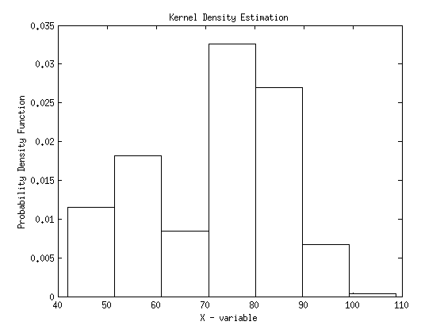
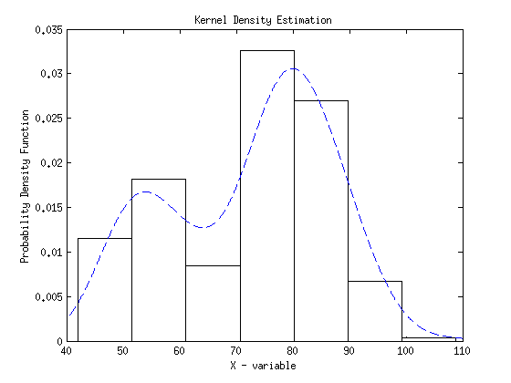
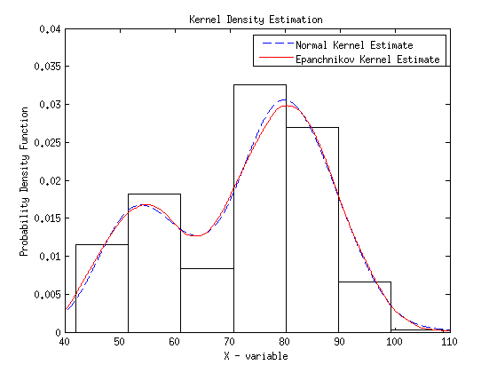

% DENSITY ESTIMATION OF THE OLD FAITHFUL DATA
addpath ~/Documents/Stat572/CompStatsToolboxV2 % use geyser data load geyser data = geyser; n = length(data);
Use Normal Reference Rule for bin width of frequency histogram.
h = 2.15*sqrt(var(data))*n^(-1/5); t0 = min(data)-1; tm = max(data)+1; bins = t0:h:tm; vk = histc(data,bins); vk(end) = []; fhat = vk/(n*h); bc = (t0+h/2):h:(tm-h/2); bar(bc,fhat,1,'w') hold on xlabel('X - variable') ylabel('Probability Density Function') title('Kernel Density Estimation')
Monte Carlos Trials
M = 100; % choose an appropriate domain x = linspace(40,110,5000); % domain % sample size of MC sampling n = 150; % find the index for x = x0 = 80 x0ind = find(x>79.999 & x<80.009);
NORMAL KERNEL
% choose smoothing parameter h = 1.06*std(data)*n^(-1/5); % initialize vector for estimated pdf fhat = zeros(size(x)); for j = 1:M % sample from geyser data ind = unidrnd(length(geyser),1,n); data = geyser(ind); % evaluate using the normal kernel for each data point % at all x in the domain for i=1:n % get each kernel function evaluated at x % centered at data and weighted by h f=exp(-(1/(2*h^2))*(x-data(i)).^2)/sqrt(2*pi)/h; % add each ith average f vector to get estimate pdf height fhat = fhat+f/(n); end end % this is the expected value of fhat based on the MC simulation fhat = fhat./M; % Calculate the expected value of the MSE for x = x0, normal kernel % estimate using entire geyser data data = geyser; fhatg = zeros(size(x)); for i=1:n % get each kernel function evaluated at x % centered at data and weighted by h f=exp(-(1/(2*h^2))*(x-data(i)).^2)/sqrt(2*pi)/h; % add each ith average f vector to get estimate pdf height fhatg = fhatg+f/(n); end MSEn = mean((fhatg(x0ind)-fhat(x0ind)).^2); linenorm = plot(x,fhat,'--b');
Density estimate using Epanechnikov
% adjust smoothing parameter for the Epanchnikov kernel h = h*(30*sqrt(pi))^(1/5); % initialize vector for estimated pdf fhat = zeros(size(x)); for j = 1:M % sample from geyser data ind = unidrnd(length(geyser),1,n); data = geyser(ind); % evaluate using the Epanchnikov kernel for each data point % at all x in the domain for i=1:n % set up the indicator function I = abs((x-data(i))/h)<1; % get each kernel function evaluated at x % centered at data f=(0.75*(1-(((x-data(i)).^2)/(h^2)))/h).*I; fhat = fhat+f/(n); end end % this is the expected value of fhat based on the MC simulation fhat = fhat./M; % Calculate the MSE for x = x0, Epanchnikov kernel % estimate using entire geyser data data = geyser; fhatg = zeros(size(x)); for i=1:n % set up the indicator function I = abs((x-data(i))/h)<1; % get each kernel function evaluated at x % centered at data f=(0.75*(1-(((x-data(i)).^2)/(h^2)))/h).*I; fhatg = fhatg+f/(n); end MSEe = mean((fhatg(x0ind)-fhat(x0ind)).^2);
lineepan = plot(x,fhat,'Color','r'); axis([40 110 0 .04]) legend([linenorm,lineepan],'Normal Kernel Estimate','Epanchnikov Kernel Estimate') hold off fprintf('\nMSE using Normal Kernel density estimation: %2.6d\n', MSEn) fprintf('\nMSE using Epan Kernel density estimation: %2.6d\n', MSEe)
MSE using Normal Kernel density estimation: 3.106776e-07 MSE using Epan Kernel density estimation: 9.336941e-08